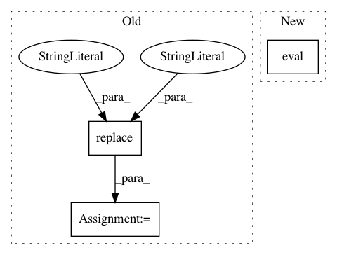

e3dbf30b449033ee584159dc0e462741d4e0e15b,mmdnn/conversion/pytorch/pytorch_graph.py,PytorchGraph151,extractgraph,#PytorchGraph151#Any#,189
Before Change
node_scope_str = re.findall(r"[^()!]+", node.__str__())[-2]
for x in node_scope_str.split(","):
if re.findall(r"%\S+.weight", x):
node_scope = ".".join(re.findall(r"%\S+.weight", x)[0].replace("%","",1).split(".")[:-1])
self.layer_weight_map[node_name] = node_scope
graph, params_dict, torch_out = torch.onnx.utils._model_to_graph(self.model, dummy_input)
nodes = list(graph.nodes())
After Change
from torch.onnx.utils import OperatorExportTypes
from torch.onnx.utils import _trace
self.model.eval()
with scope_name_workaround():
graph = _trace(self.model, dummy_input, OperatorExportTypes.ONNX)
nodes = list(graph.nodes())
In pattern: SUPERPATTERN
Frequency: 3
Non-data size: 3
Instances
Project Name: Microsoft/MMdnn
Commit Name: e3dbf30b449033ee584159dc0e462741d4e0e15b
Time: 2020-07-31
Author: 50827462+XiaoXYe@users.noreply.github.com
File Name: mmdnn/conversion/pytorch/pytorch_graph.py
Class Name: PytorchGraph151
Method Name: extractgraph
Project Name: scipy/scipy
Commit Name: fafdd6001a8259f1408bc5f2c2cb91e5eb96c6ca
Time: 2020-08-05
Author: 44255917+swallan@users.noreply.github.com
File Name: benchmarks/benchmarks/stats.py
Class Name: ContinuousFitAnalyticalMLEOverride
Method Name: setup
Project Name: vatlab/SoS
Commit Name: 557f7e52f816e477195bc12e0db63e374c4de0e7
Time: 2016-10-25
Author: ben.bog@gmail.com
File Name: pysos/kernel.py
Class Name:
Method Name: from_R_repr